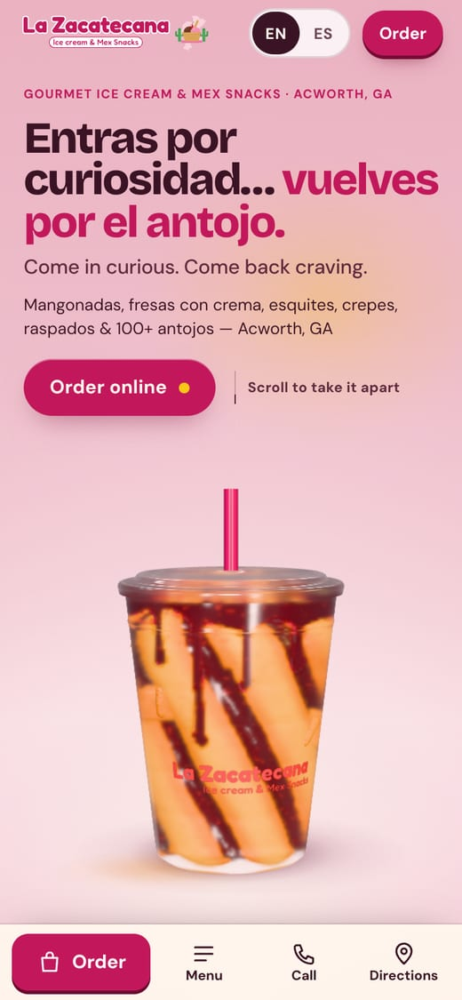
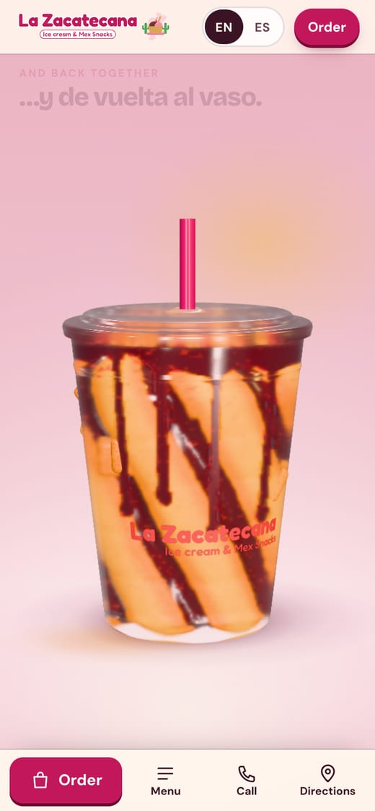
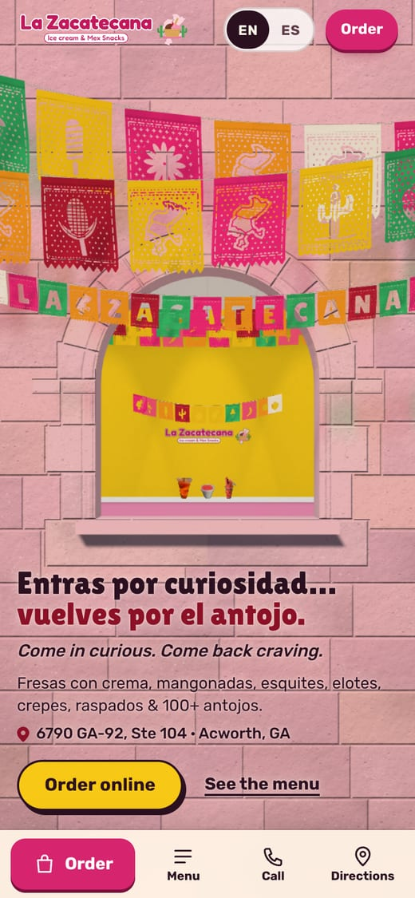
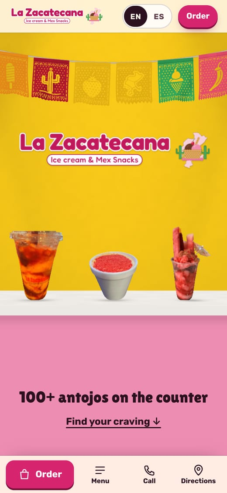
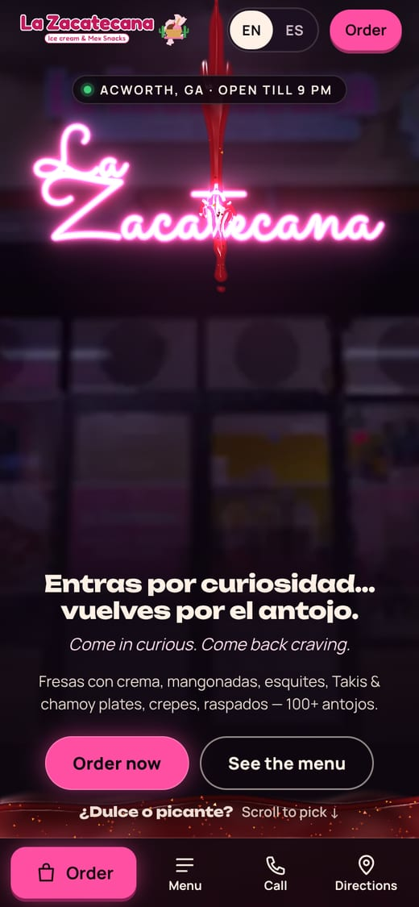
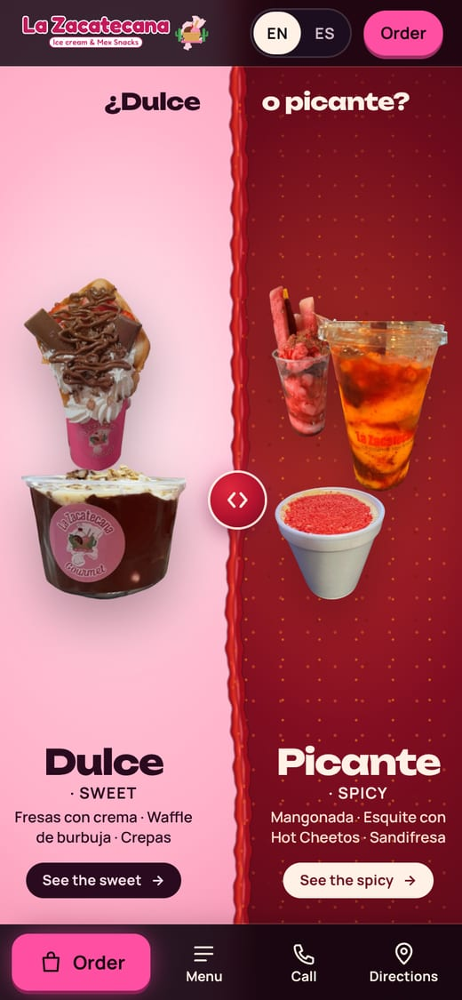

La Zacatecana Gourmet Ice Cream Shop & Mex Snacks · Acworth, GA
Pick a direction
Three complete websites with the same menu, craving finder, ordering and visit info. They differ in the opening scroll and the look. Open one, then scroll slowly through the top of the page: that's the show.
- Best in Chrome or Edge
- Try it narrow too (phone size)
- EN / ES switch in the top bar
A La Mangonada, Desarmada


A 3D Mangonada comes apart into its ingredients as you scroll, rebuilds, then lands in its menu card.
Best at a premium product moment. Shows one item rather than the variety.
Open A
or the web preview
My pick
B Papel Picado


Papel picado over pink Zacatecas stone lifts like a curtain; you move through to their yellow logo wall and pink counter.
Feels like their shop and sells the 100+ variety. Less tech "wow" than C.
Open B
or the web preview
C Chamoy After Dark


A neon sign flickers on, live chamoy you can stir pours over it, then drains into a "¿Dulce o picante?" split.
The biggest wow. A night mood, and the heaviest on older phones.
Open C
or the web preview